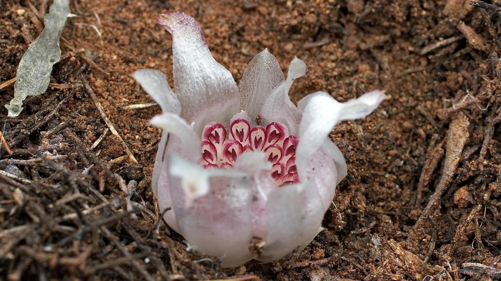
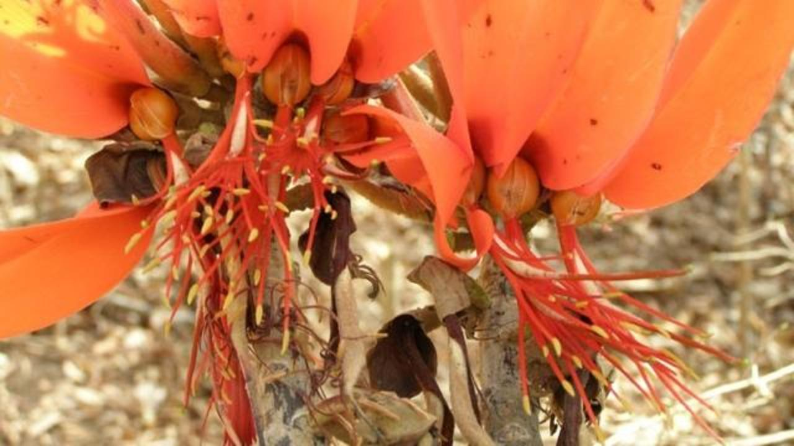

¿QUE ES?
Se refiere a la probabilidad de que una especie vegetal desaparezca: a mayor peligro, mayor probabilidad de extinción. La existencia de una especie en peligro de extinción, por lo tanto, se encuentra comprometida.
EJEMPLOS
-
PLANTA DE JARRA DE ATTENBOROUGH
-
Tiene un hábitat muy restringido, se conoce que existe solamente en la cumbre relativamente inaccesible del monte Victoria en Palawan, en las Filipinas. Se cree que su población asciende a unos cientos de ejemplares. Las plantas de jarra son carnívoras y la de Attenborough es conocida por su capacidad para capturar incluso ratas.
-
ORQUIDEA SUBTERRANEA DEL OESTE
-
Esta orquídea vive su vida de forma subterránea. Sólo existe en la región occidental de Australia. Su carencia de clorofila le impide absorber la energía solar como la mayoría de las plantas. Se cree que hay menos de 50 especímenes. La especie no ha sido evaluada por la UICN (Unión Internacional para la Conservación de la Naturaleza), pero Australia la clasifica como en peligro crítico
-
-
-
-
. 
ÁRBOL CORALINO
-
El árbol coralino, con sus flores rojas brillantes y tronco espinoso, vive exclusivamente en los bosques del sureste de Tanzania. Fue declarado extinto en 1998, pero redescubierto en 2001 en una pequeña parcela de bosque. En la actualidad hay menos de 50 individuos maduros en el medio silvestre.
-

Volver Index